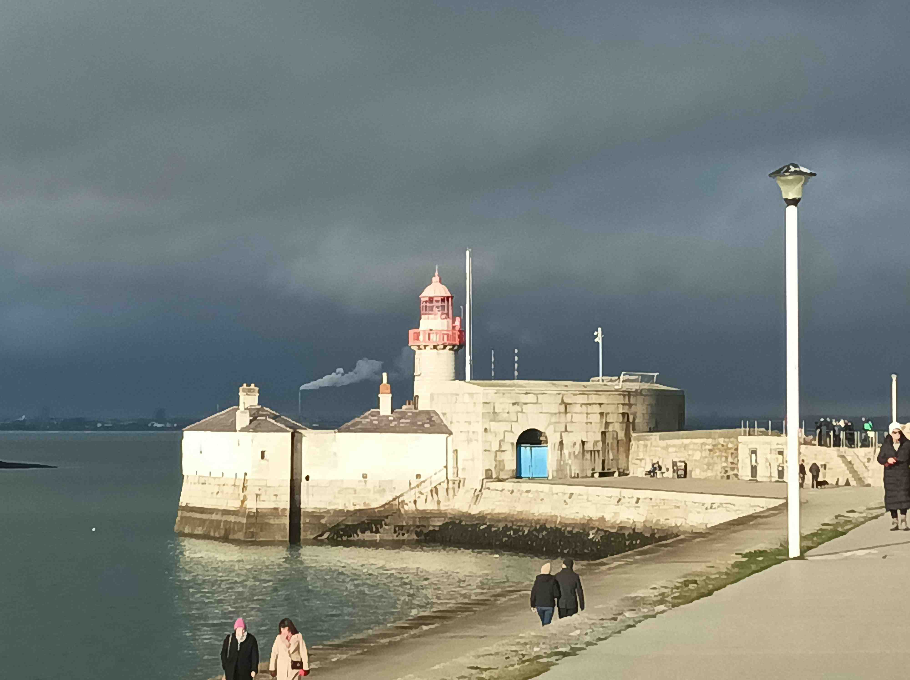
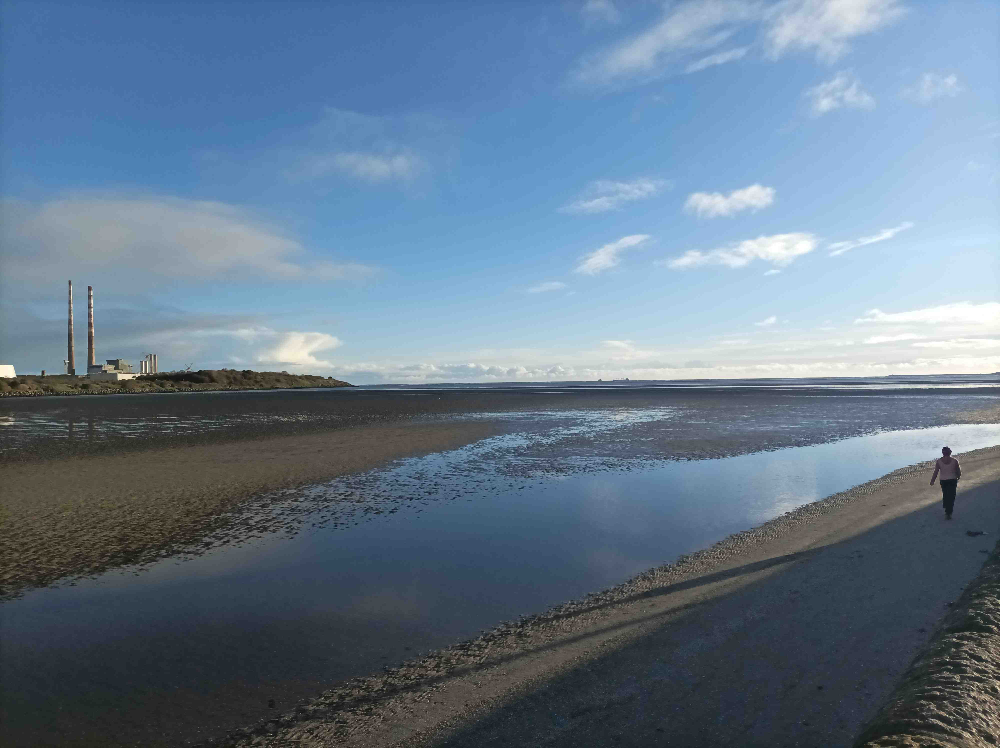
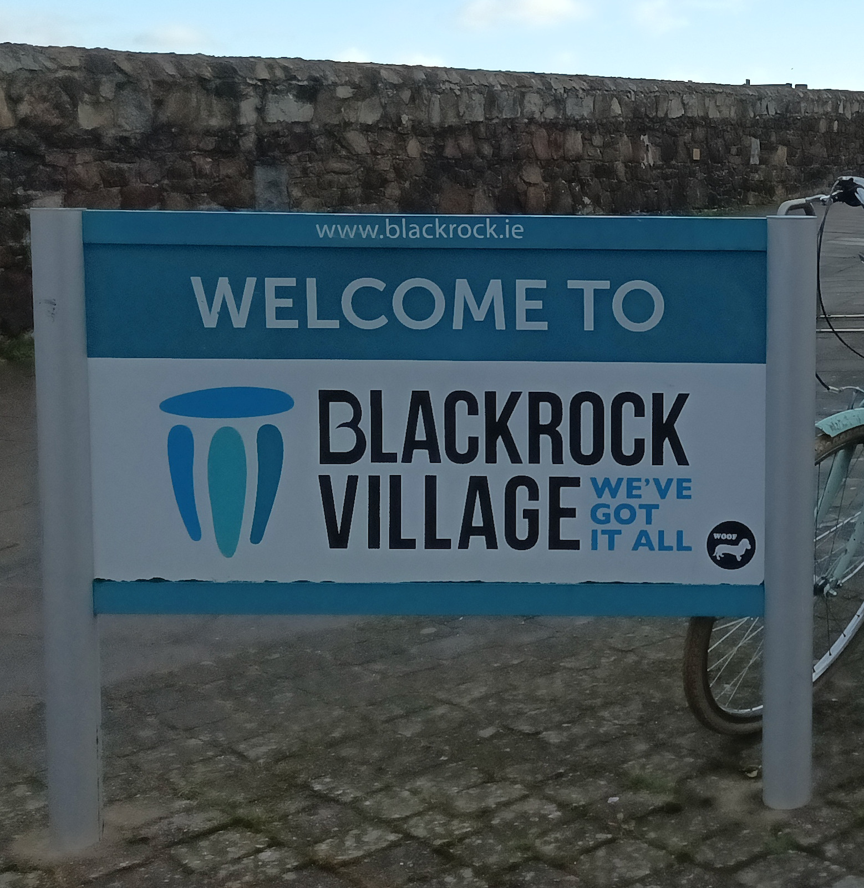
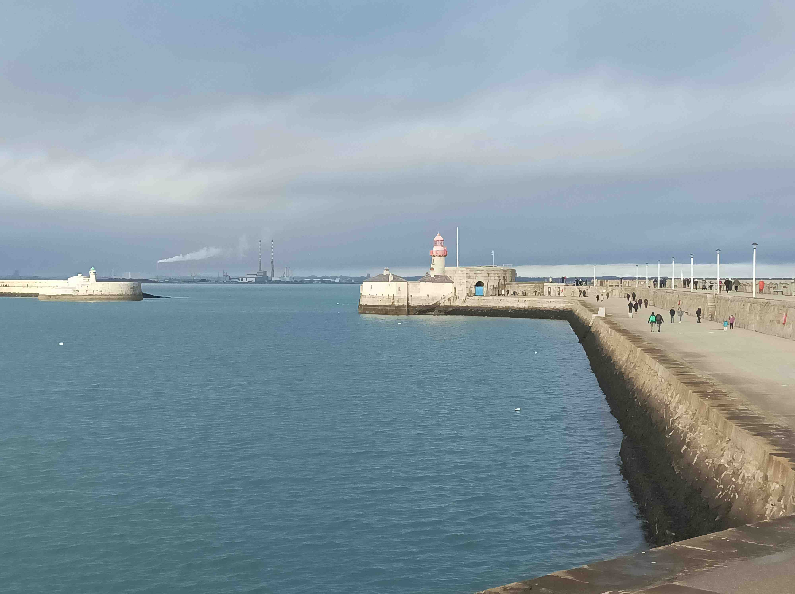
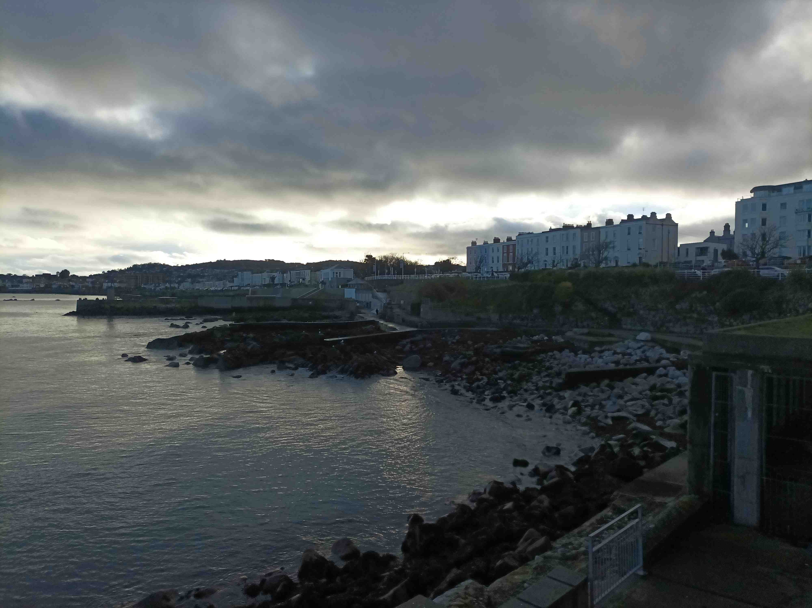
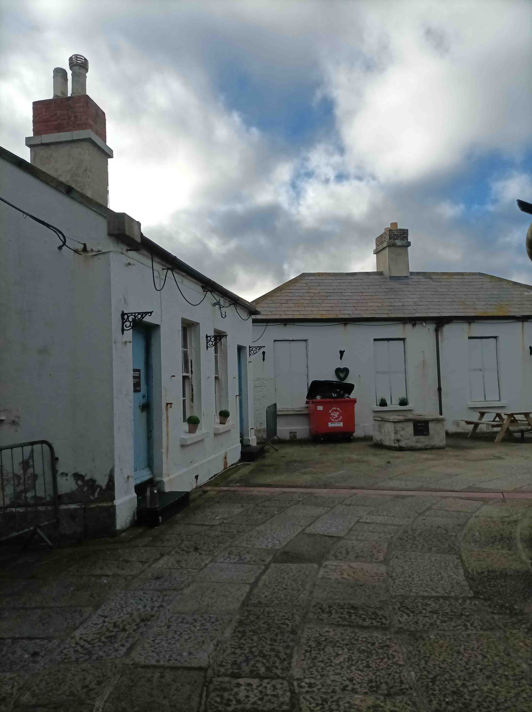

4 Dun Laoghaire 1

0805, Sunday January 1, 2023
It is, as ever, a slow start. You want to be gone but the bike says no. The back brakes are banjoed, which I can live with, and the fancy mudguard is dislodged, which I can’t, cos it’s dragging on the wheel. This stuff ought to be dunzoed the night before by my bike mechanic, but I am he, and here we are now. I’ve been tying up mudguard with a phone charger but that’s knackered now, so I need to dig out a longish bolt and two nuts to tighten it into place. Then I oil the chain and do a quick circle around the parked cars to spread the oil across the chain and the cassette, but the frikkin chain pops out of the bottom gear, and now the dérailleur is in the spokes. I’m at my wit’s end with this bike. This keeps on happening when I’m climbing up hills. It did me in Chapelizard last week and it did me in Rockbrook a while back when I was testing out whether I could climb a bit of a mountain on it, partly out of curiosity, and partly to piss off all the allthegearmenthemselves who forget that the mad bastards were doing the Tour de France long before carbon frames were available on the bike-to-work scheme. I bumped into Alan Lewis in Terenure on my way up and he was like, you’re not going up there on that are you, with echoes of Barry O’D giving Kilroy the same grief out in Enniskerry over the hack of his Virgil van, but that attitude only gave me the extra urge of defiance to make it. Sadly, the chain was having none of it that day too and I had to abandon my climb at Mount Venus Road cos by the time I had it back on, it was time to go and pick up the chunfla from his babysitter.
4.1 And they’re off
For once I know where I’m going. Dun Laoghaire lighthouse, or at least one of them. I head straight to the N3 cos I know I’ll see the low sun there, instead of it being obscured behind houses and trees on the quieter roads, and it’s a, eh, Bank Holiday Sunday today so everywhere will be doubly quiet. The mudguard has already started to come loose and of course it’s because I’ve forgotten to tighten the two nuts so I have to dismount and tighten them with my fingers just. Sunny Cabra is looking particularly good and I flirt with finding the best spot to capture its tree-lined radiance but I start getting pissed of with all the stopping so I don’t bother. It’s plain sailing as far as the quays from here, and I roll through Stoneybatter all the way to the James Joyce bridge on the Liffey, which really does look, at least from this angle, like the open book it is supposed to, and more tantalisingly like the inner thighs of a supine lady with splayed legs. In squareness, it was the filthy man himself who made that connection, inasmuch as I can remember Dr John Nash eile telling us in college.
4.2 Negotiating the quays

I turn left onto the quays and I’m disappointed that the luminescent aperture of the Liffey estuary is not bookended by sunshine, because the last time I checked (Chapter 1), there were rays of light at the end of this grey tunnel, at this hour of the morning. But that was autumn and this is deepest winter, and with the slight north-eastward tilt of the quays, the sun seems to be hiding in the Deep South. I think about turning right over O’Connell Bridge, and actually I do, but I decide against the horrors of D’Olier St and the Protestant prison because again the sun will be blocked by buildings. So I weave along the skinny, tree-lined footpath on the south quays, using my bike’s might to needlessly oust a hungover pedestrian who is already struggling to negotiate a dry passage between the wall, the trees, and the puddles that form on the ruptured concrete. I’m actually surprised that town is this quiet, as you’d normally have more wandering tourists struggling to find a worthy breakfast, and few heads on the walk of shame. Maybe they were all just up extra late last night celebrating the dawn of the New, to be fair, Year.
I cross back over Butt Bridge and there’s barriers everywhere cos some kind of event musta been going on last night. I saw a wodge of scaffolding th’other day when I was driving back over the East Link bridge. I actually get yapping to the foreman cos I stop and ask a worker for a loan of spanner to tighten my nuts and she gives a me a pliers in lieu. The foreman moves me outside the barriers - cos I’m in a technically work environment? – but he’s actually sound about it and he tells me that Westlife were playing, plus a few decent acts on the smaller stages. He’s been working there since lunchtime yesterday and he looks shattered, although I’d say he’s seen a few decent acts in his day, judging by the cut of him, or lack thereof. I give up on the pliers and give it back to your wan and I have to say it’s really nice to see young women working in construction, cos you never woulda seen that in my Doris Day.
.jpeg)
Anyways, so I’m over the East Link and I do a quick bit of visual penance through Poolbeg’s industrial scaldscape, before coming back out onto Sandymount Strand. I actually got this far last week, planning to hit the very same lighthouse in Dun Laoghaire, but I dropped in to see Storan whose wife had a horrific accident off the bike recently. I was worried that him and the kids would be on their Tobler for Xmo. It turned out she was just home and they were able to spend it together in their new house. Thanks be to the hokey she’s gonna be ok, with no spinal or head damage, despite dozens of broken bones, and it’s a reminder to never undertake a bus or a lorry at a junction, until they’ve moved on or left ahead of you. She actually thought the lorry driver had seen her and was stalling until she cycled on, but unfortunately not. He hit her, knocked her over, and was halfway over her body before a passerby screamed and stopped the lorry, saving her life. By the time she told me the whole story it was too late to push on to Dun Laoghaire so I ended up giving myself a tour of the Dodder River on the way home, which is a bit of a work-on, in case you are wondering, but I’m glad cos this week it’s much sunnier.
4.3 Do the Strand

So I take the pedestrian path along the strand cos the tide is out and the walkers are on the sand, and then at the end of the footpath I hop down a few rocks to the sand, carrying my obviously bike, and thinking I’m Wout van Aert now, doing cyclo-cross. I only do a few hundred jaggedy metres on the rippled sand before coming out at Sydney Parade crossing and there’s a plaque there for Merrion Strand, distinct from Sandymount Strand. I wonder if this is where Stephen starts his walk in the Proteus chapter of Ulysses, and it seems to the access point Oliver St John Gogarty suggests in his 1937 autobiography, where he writes “It costs one hour’s sleep and half-a-crown to ride out to meet the winnowing tide at Merrion”. The only difference nowadays is that it is easier to rent a DublinBike than a horse. I have to stop again to fix the mudguard but there’s sand in my literally nuts and it’s hard to screw them back on. I say hello to a Saudi lady with a boxer dog, a combo I’ve never seen before, and later I wonder if she’s an infidel like my wife, also married to an Inglesi, cos anyone with a dog like that is clearly here for the long haul.
4.4 We’ve got it all
I’m back on the Rock Raid but cycling here is mingin, even with the advantage of a half-arsed bike lane, and l’m looking to see if that park on the left will solve my problems. On Seafort Parade, opposite Blackrock actual College, a couple of lads direct me down through an arch and into the park, which does have a bike lane, but before you know it, we all get squished through a five-foot path between the Dort barriers and a stone wall. It’s a pedestrian right-of-way zone, understandably, and it turns out that the half-arsed bike lane award of the day goes to this Newgrange-esque passageway. I come out at the Dort Station and I’m welcomed by a modest sign saying “Blackrock village: we’ve got it all”. Except for modesty.

In fairness, the village is a model example of how to quickly turn a linear Irish village - as in, all of them — into a public space worth hanging out in. There’s public benches alloverthegaff, and some of them are even arranged so that two or more people can have a conversation. Throw in a welt of cafes with outdoor seating, and I’d say the boozers are prone to the odd spillover too, and suddenly you have a village worth actually being in, for reasons beyond Snail Mail and picking up a pinta milk. It doesn’t take a lot of effort and there’s no reason not to do more of this everywhere. Basically just keep what you had during Covid and add a few nuts and bolts for permanence. Traffic is one-way but there’s a caynterflay bike lane. Plus it’s worth coming for the accents alone, if only to hear what you own kids will sound like in a decade or two.
I exit the village and pop down to Seapoint just to scope out the Jacques Chirac with the swimmers. There’s dozens of punters here, freezing their bits off, and looking all the happier for it. I sit down for a breakfast of oranges and nut bars and soak up fragments of chat. Southsiders don’t get enough credit for their banter quotient, being neither Real Dubs nor the proud culchies who moved here before spawning them, so nobody much fights their corner. This bizarre mix of being nobody’s child and the nation’s rich kids finds fullest expression in the extraordinary Ross O’Carroll Kelly novels but also in the fact that many locals can see the funny side of their spectacularly successful rugby culture. Or as GK put it: if you’re a Leinster fan wearing a Leinster jersey, then you don’t get the joke. Being here also gives me a rare feeling of fitting in, which is something I seldom feel because I kinda didn’t grow up in one place, but my ridonculous accent doesn’t stand out here.
4.5 Dun Laoghaoire pier

The problem now is that I’m freezing my own bits off and I’ll be stopping yet more at the lighthouse. I shuffle down to Dun Laoghairo, another town designed for people to enjoy living in, and I get the base of the main pier. There’s a queue for coffee and signs for no cycling on the pier, so I whip out my bike lock and it’s jammed. I ask the fella in Bryan’s coffee for some oil and he comes back and solves the problem with some WD-40, which David O’Doherty would advise against. But it’s a quickfix and now I have coffee and a locked bike. I’m glad to be walking because my head is fried by now. I start moseying on the wrong side of the pier walk, cos I want to see the coast before they do it up, as they no doubt will soon, given how much effort has been going into, again, making this a nice place to be. God Bless Dun Laoghaire-Rathdown county council, with their splendiferous libro and many public spaces. I love coming here because the space is made for people to enjoy themselves, and you don’t even need to spend money, although that option is there, from Teddy’s ice cream to food markets and a stack of restaurants with outdoor seating. There’s well laid out spaces to walk, benches, a playground, and the People’s Park adjacent. It feels like an Italian piazza here where all ages intersect, giving an orchestral fullness to life.

I get changed in a secluded spot - probably a classic location for knacker drinking - and I’m nice and warm again as I rejoin the masses making their way to the lighthouse. I hope that this pier can be a model of what is to come in the future of this country, as the population increases and more worthwhile coastal towns either spring up or expand in way that makes being there a pleasant experience. The lighthouse at the end of the pier lives inside a rundown Martello Tower and there’s a disused cottage or two, depending on how they are defined. They sell ice creams from a van and I buy one off the world-weary shopkeeper who hasn’t yet reconciled in his head the New Year vibes with the fact that he’s just had to clean up a buncha portaloos. I lick my ice cream lustily on the walk back and then I’m on the bike for a surprisingly straight shot across the city on the diagonal running from south-east to north-west. There’s little talk of a bike lane from Blanch to Dun Laoghaireó, but it would go a long way towards unifying this city a little.
